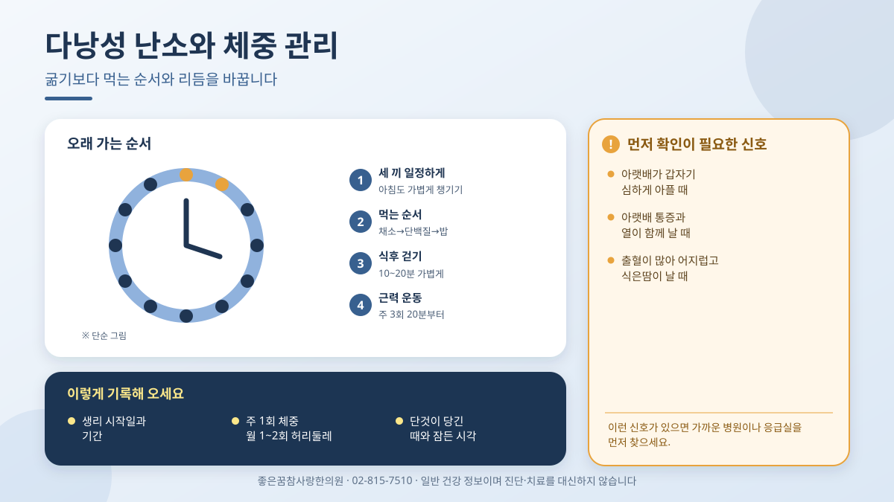

이종호 한의사 감수좋은꿈참사랑한의원 대표원장 (한의사 면허번호 19769)발행 2026-11-26 · 수정 2026-11-26
이 글의 차례
- 다낭성 난소 증후군과 체중은 어떻게 이어져 있나요
- 왜 남들처럼 해도 살이 잘 빠지지 않을까요?
- 체중보다 먼저 보는 숫자
- 굶지 않고 먹는 순서 바꾸기
- 움직임은 꾸준함이 먼저입니다
- 다낭성 난소 증후군과 헷갈리기 쉬운 상태
- 임신을 준비하고 계신다면
- 여드름과 털, 체중이 함께 신경 쓰일 때
- 다낭성 난소 증후군이 있는 분들이 자주 헷갈리는 것
- 마음이 먼저 지칠 때
- 먼저 이렇게 여쭙니다
- 일상에서 먼저 해 볼 수 있는 것
- 한의원에서 함께 살필 수 있는 경우
- 이렇게 기록해 오시면 상담이 쉬워집니다
- 숫자보다 흐름을 보는 마음
- 이런 증상은 먼저 확인이 필요합니다
- 함께 읽으면 좋은 글
저녁 약속을 줄이고 간식도 끊었는데 체중계 숫자는 몇 주째 그대로입니다. 친구는 같은 방법으로 몇 킬로그램이 빠졌다는데, 나만 왜 이럴까 싶어 체중계에서 내려오는 발걸음이 무겁습니다. 다낭성 난소 증후군 진단을 받은 분들께 진료실에서 자주 듣는 이야기입니다.
다낭성 난소 증후군은 생리 주기가 불규칙하거나 길어지고, 남성 호르몬과 관련된 변화가 나타나며, 초음파에서 난소에 작은 난포가 많이 보이는 상태를 함께 일컫는 말입니다. 여기에 체중이 잘 늘고 잘 빠지지 않는 어려움이 함께 오는 분이 많습니다.
먼저 말씀드리고 싶은 것은, 살이 잘 빠지지 않는 것이 의지가 약해서가 아니라는 점입니다. 몸 안에서 당과 호르몬을 다루는 방식이 조금 다르게 움직이고 있기 때문입니다. 그 흐름을 이해하면 무작정 덜 먹는 방법보다 나에게 맞는 방법을 찾기가 쉬워집니다.
이 글에서는 다낭성 난소 증후군과 체중이 어떻게 이어지는지, 왜 굶는 방식이 잘 맞지 않는지, 그리고 산부인과 진료를 이어 가면서 생활과 한의원 진료를 어떻게 곁들이면 좋은지를 차근차근 말씀드리겠습니다.
다낭성 난소 증후군과 체중은 어떻게 이어져 있나요
다낭성 난소 증후군이 있는 분들 가운데에는 인슐린이 제 역할을 덜 하는 상태, 흔히 인슐린 저항성이라고 부르는 상태가 함께 있는 경우가 많다고 알려져 있습니다. 인슐린은 혈액 속 당을 세포 안으로 넣어 주는 열쇠 같은 호르몬입니다.
열쇠가 잘 맞지 않으면 몸은 인슐린을 더 많이 만들어 냅니다. 인슐린이 많은 상태에서는 몸이 에너지를 지방으로 쌓아 두는 쪽으로 기울기 쉽고, 특히 배 주변에 지방이 모이기 쉽습니다. 또 많아진 인슐린이 난소를 자극해 남성 호르몬이 늘어나는 흐름과도 이어집니다.
그래서 다낭성 난소 증후군에서 체중 관리는 단지 몸매의 문제가 아니라 생리 주기, 여드름, 털, 기운과 함께 맞물린 이야기입니다. 체중이 조금만 줄어도 주기가 조금씩 자리 잡는 분이 있다고 알려져 있어, 체중을 함께 살피는 것이 의미가 있습니다.
왜 남들처럼 해도 살이 잘 빠지지 않을까요?
인슐린이 많은 상태에서는 식사 뒤 혈당이 빠르게 올랐다가 떨어지면서 금방 다시 배가 고프고 단것이 당기기 쉽습니다. 오후 늦게 과자나 빵에 손이 가는 것도 이 흐름과 관련이 있는 경우가 많습니다. 의지보다 몸의 신호가 먼저 움직이는 셈입니다.
또 굶거나 너무 적게 먹으면 몸은 에너지를 아끼는 쪽으로 바뀌고, 근육이 줄어 하루에 쓰는 에너지가 더 줄어듭니다. 그러다 다시 먹기 시작하면 체중이 쉽게 돌아오고, 이 과정이 반복되면 체중 관리가 점점 더 어려워집니다.
잠이 부족하거나 스트레스가 이어질 때도 식욕을 부추기는 신호가 늘어납니다. 그래서 다낭성 난소 증후군이 있는 분의 체중 관리는 무엇을 덜 먹느냐보다 언제, 어떤 순서로, 얼마나 일정하게 먹고 자느냐를 함께 보는 것이 중요합니다.
체중보다 먼저 보는 숫자
체중계 숫자는 하루에도 물과 음식, 생리 주기에 따라 1~2킬로그램씩 오르내립니다. 그래서 체중 하나만 보면 쉽게 실망하게 됩니다. 저는 허리둘레와 근육량, 생리 주기를 체중과 함께 보시길 권합니다.
허리둘레는 배꼽 높이에서 숨을 편하게 내쉰 상태로 재고, 한 달에 한두 번 같은 조건에서 적어 두시면 됩니다. 체중은 그대로인데 허리둘레가 줄었다면 몸속 지방의 흐름이 좋은 쪽으로 바뀌고 있다는 신호일 수 있습니다.
생리 주기도 중요한 숫자입니다. 생리 시작일을 적어 두면 생활을 바꾼 뒤 주기가 어떻게 달라지는지를 볼 수 있습니다. 체중이 크게 줄지 않더라도 주기가 조금씩 일정해진다면 그것도 의미 있는 변화입니다.
굶지 않고 먹는 순서 바꾸기
다낭성 난소 증후군이 있는 분께 저는 먼저 끼니를 거르지 않는 것부터 권합니다. 아침을 거르고 점심과 저녁에 몰아서 먹으면 혈당과 인슐린이 크게 출렁이기 쉽습니다. 하루 세 끼를 비슷한 시각에 드시는 것이 출발점입니다.
한 끼 안에서는 먹는 순서를 바꿔 보세요. 채소와 나물을 먼저 몇 입 먹고, 달걀이나 두부, 생선, 고기 같은 단백질 반찬을 먹은 뒤, 밥이나 면은 마지막에 드시는 방식입니다. 같은 양을 먹어도 식후 혈당이 덜 출렁이는 데 도움이 될 수 있습니다.
밥을 완전히 끊기보다 양을 조금 줄이고, 흰쌀만 드시던 분은 잡곡을 조금씩 섞어 보세요. 단 음료와 과일 주스는 혈당을 빠르게 올리니 물이나 보리차로 바꾸는 것부터 시작하시면 부담이 적습니다.
움직임은 꾸준함이 먼저입니다
움직임은 인슐린이 제 역할을 하도록 돕는 데 큰 도움이 됩니다. 특히 식사 뒤 10~20분 가볍게 걷는 것만으로도 식후 혈당이 덜 오르는 데 도움이 될 수 있습니다. 거창한 운동 계획보다 매일 할 수 있는 움직임이 먼저입니다.
근력 운동도 함께 하시면 좋습니다. 근육은 당을 쓰는 큰 창고 같은 곳이라, 근육량이 늘면 같은 음식을 먹어도 몸이 당을 다루기가 조금 수월해집니다. 스쿼트, 벽 짚고 팔굽혀펴기, 계단 오르기처럼 집에서 할 수 있는 동작부터 시작해 보세요.
처음부터 매일 한 시간씩 하겠다고 마음먹으면 오래가기 어렵습니다. 일주일에 세 번, 20분부터 시작해 몸이 익숙해지면 조금씩 늘려 가는 편이 오래 이어 가기 좋습니다.
다낭성 난소 증후군과 헷갈리기 쉬운 상태
생리가 불규칙하고 체중이 늘었다고 모두 다낭성 난소 증후군은 아닙니다. 갑상선 기능 저하가 있을 때도 체중이 늘고 주기가 흔들릴 수 있고, 급격한 체중 변화나 큰 스트레스 뒤에도 주기가 일시적으로 달라지기도 합니다.
젖이 나오는 느낌이 있거나 두통과 함께 주기가 멈췄다면 다른 호르몬 문제를 살펴봐야 할 수도 있습니다. 그래서 진단은 산부인과에서 초음파와 호르몬 검사를 함께 보고 내리며, 필요하면 내분비내과와 함께 확인하게 됩니다.
임신을 준비하고 계신다면
다낭성 난소 증후군이 있으면서 임신을 준비하고 계신다면, 배란이 일정하지 않아 시기를 맞추기 어려울 수 있습니다. 이럴 때는 산부인과와 먼저 상의해 배란 상태를 확인하고 계획을 함께 세우시는 것이 순서입니다.
생활 관리는 임신 준비와도 잘 맞물립니다. 끼니를 일정하게 하고, 식후 걷기와 잠을 챙기는 일은 몸이 준비되는 데에도 도움이 됩니다. 한약을 상의하실 때는 임신 준비 중이라는 것을 먼저 알려 주시고, 산부인과와 상의한 내용을 바탕으로 신중하게 정합니다.
여드름과 털, 체중이 함께 신경 쓰일 때
다낭성 난소 증후군이 있는 분들 가운데에는 턱과 볼에 여드름이 되풀이되거나, 턱이나 배에 털이 굵어지는 변화로 마음고생을 하는 분이 많습니다. 체중까지 늘면 거울 보기가 싫어지고 사람을 만나는 것도 꺼려진다고 말씀하십니다.
이런 변화는 모두 같은 호르몬 흐름에서 나오는 경우가 많아서, 체중과 식사 리듬을 살피는 일이 피부와도 이어질 수 있습니다. 단 음식과 늦은 밤 간식이 줄면 여드름이 덜 올라온다고 느끼시는 분도 계십니다.
여드름이 심하거나 털 때문에 일상이 힘들다면 피부과 진료를 함께 받으시는 것도 좋습니다. 피부과와 산부인과, 한의원은 서로 다른 부분을 맡아 나란히 갈 수 있습니다.
다낭성 난소 증후군이 있는 분들이 자주 헷갈리는 것
첫째, 마른 사람은 다낭성 난소 증후군이 아니라는 생각입니다. 체중이 정상이거나 마른 편인데도 다낭성 난소 증후군이 있는 분이 있습니다. 이런 경우에는 체중보다 근육량, 끼니 리듬, 잠을 더 세심하게 살펴봅니다.
둘째, 체중만 빼면 모든 것이 해결된다는 생각입니다. 체중 관리는 중요한 부분이지만, 주기와 피부, 기운은 잠과 스트레스, 움직임과도 함께 움직입니다. 체중 하나에만 마음을 쏟으면 오히려 지치기 쉽습니다.
셋째, 한 달 만에 달라져야 한다는 조급함입니다. 몸의 리듬이 자리 잡는 데는 적어도 몇 달이 걸리는 경우가 많습니다. 석 달 정도를 한 묶음으로 보고 흐름을 살피시길 권합니다.
마음이 먼저 지칠 때
체중이 잘 줄지 않으면 자책이 쌓이고, 자책이 쌓이면 폭식과 굶기를 오가는 흐름에 빠지기 쉽습니다. 먹고 나서 죄책감이 크거나 체중 때문에 하루 기분이 정해진다면, 그 마음부터 함께 다독여야 합니다.
체중계는 일주일에 한 번만 올라가고, 숫자 대신 잘한 일 하나를 적어 보세요. 식후에 걸은 날, 단 음료 대신 물을 마신 날을 적다 보면 내가 이미 하고 있는 노력이 눈에 보입니다.
먼저 이렇게 여쭙니다
처음 오시면 대략 이런 내용을 여쭙니다. 미리 생각해 오시면 이야기가 한결 수월해집니다.
- 진단은 언제 받으셨고, 산부인과에서 어떤 안내를 받으셨나요?
- 최근 생리 시작일과 주기는 어떠신가요?
- 하루 끼니 시각과 단것이 당기는 시간대는 언제인가요?
- 체중이 가장 많이 늘었던 시기와 그때의 생활은 어땠나요?
- 잠드는 시각, 깨는 시각, 낮의 피로는 어떠신가요?
- 드시는 약이나 영양제, 임신 계획이 있으신가요?
모든 질문에 정확히 답하지 못하셔도 괜찮습니다. 생리 시작일 몇 번과 최근 검사 결과지만 있어도 이야기의 큰 줄기는 잡힙니다. 예전에 해 보셨던 다이어트 방법과 그때 몸이 어땠는지도 말씀해 주시면, 이번에는 무엇을 다르게 해 볼지 정하는 데 도움이 됩니다.
가족 가운데 당뇨나 비슷한 주기 문제를 겪으신 분이 있는지도 함께 여쭙니다. 체질과 생활 습관이 비슷하게 이어지는 경우가 있어, 검진 주기와 식사 관리의 무게를 정할 때 참고가 됩니다.
일상에서 먼저 해 볼 수 있는 것
- 하루 세 끼를 비슷한 시각에, 아침은 가볍게라도 챙기기
- 채소 먼저, 단백질 다음, 밥은 마지막 순서로 먹기
- 단 음료는 물이나 보리차로 바꾸기
- 식사 뒤 10~20분 걷기
- 일주일에 세 번 20분 근력 운동
- 잠드는 시각을 일정하게 맞추고 밤늦은 간식 줄이기
한꺼번에 다 하려 하지 마시고 하나를 골라 2주 이어 가 보세요. 몸이 그 습관에 익숙해지면 다음 하나를 더하면 됩니다. 바쁜 주에는 하나만 지켜도 충분하다고 생각해 주세요. 완벽하게 지킨 한 주보다 절반쯤 지킨 석 달이 몸에는 더 큰 변화를 남기는 경우가 많습니다.
한의원에서 함께 살필 수 있는 경우
- 끼니를 줄여도 체중이 잘 줄지 않고 단것이 자주 당기는 경우
- 배와 손발이 차고 몸이 잘 붓는 경우
- 생리 주기가 길어지거나 들쭉날쭉한 경우
- 잠이 얕고 아침에 몸이 무거운 경우
좋은꿈참사랑한의원에서는 진찰을 마친 뒤 식사 리듬과 잠, 냉기와 붓기, 주기의 흐름을 함께 보고 지금 상태에 맞는 방향을 정합니다. 침이나 온열 관리, 한약 상담 가운데 무엇이 맞는지는 진찰한 내용을 바탕으로 정합니다.
한약을 상의할 때는 드시는 약을 모두 확인하고 신중하게 정합니다. 산부인과 진료는 그대로 이어 가시고, 임신 중이시거나 준비 중이라면 먼저 알려 주신 뒤 산부인과와 상의해 주세요.
이렇게 기록해 오시면 상담이 쉬워집니다
- 생리 시작일과 기간
- 일주일에 한 번 같은 조건의 체중, 한 달에 한두 번 허리둘레
- 끼니 시각과 단것을 먹은 때
- 식후 걷기나 운동을 한 날
- 잠든 시각과 깬 시각
기록을 나란히 놓고 보면 단것이 당기는 날이 잠이 짧은 날과 겹치는지, 주기가 흔들린 달이 어떤 생활과 맞물렸는지가 보이기 시작합니다.
숫자보다 흐름을 보는 마음
다낭성 난소 증후군이 있는 분들의 체중 관리는 빠르게 결과가 보이지 않아 지치기 쉽습니다. 그래서 체중 숫자 하나보다 끼니가 일정해졌는지, 단것이 덜 당기는지, 주기가 조금씩 자리 잡는지를 함께 봐 주셨으면 합니다.
이번 주에는 식사 순서 바꾸기나 식후 10분 걷기 가운데 하나만 골라 보세요. 그 작은 변화가 쌓이는 흐름을 진료실에서 함께 살피겠습니다.
이런 증상은 먼저 확인이 필요합니다
- 생리가 몇 달째 없으면서 아랫배가 갑자기 심하게 아프거나 열이 나는 경우
- 갑자기 출혈이 많아 어지럽거나 숨이 차고 식은땀이 나는 경우
이런 신호가 있으면 한의원보다 가까운 병원이나 응급실을 먼저 찾으세요.
함께 읽으면 좋은 글
- 다낭성 난소 증후군이 있을 때 생활과 생리 주기는 어떻게 살피나요?
- 체중이 갑자기 늘거나 줄고 나서 생리 주기가 불규칙해졌을 때는 어떻게 하나요?
- 비만이라는 말을 들었을 때 체중보다 먼저 무엇을 살피나요?
- 뱃살이 걱정될 때 인바디 기록은 어떻게 활용하나요?
- 어른이 되어 턱과 볼에 붉고 아픈 여드름이 되풀이되는 성인 여드름은 어떻게 살피나요?

여쭙는 것
- 진단은 언제 받으셨고, 산부인과에서 어떤 안내를 받으셨나요?
- 최근 생리 시작일과 주기는 어떠신가요?
- 하루 끼니 시각과 단것이 당기는 시간대는 언제인가요?
생활에서 해 볼 것
- 하루 세 끼를 비슷한 시각에, 아침은 가볍게라도 챙기기
- 채소 먼저, 단백질 다음, 밥은 마지막 순서로 먹기
- 단 음료는 물이나 보리차로 바꾸기
한의원에서 함께 살필 것
- 끼니를 줄여도 체중이 잘 줄지 않고 단것이 자주 당기는 경우
- 배와 손발이 차고 몸이 잘 붓는 경우
- 생리 주기가 길어지거나 들쭉날쭉한 경우
먼저 확인이 필요한 신호
- 생리가 몇 달째 없으면서 아랫배가 갑자기 심하게 아프거나 열이 나는 경우
- 갑자기 출혈이 많아 어지럽거나 숨이 차고 식은땀이 나는 경우
한눈에 보는 표
| 구분 | 핵심 |
|---|---|
| 여쭙는 것 | 진단은 언제 받으셨고, 산부인과에서 어떤 안내를 받으셨나요? 최근 생리 시작일과 주기는 어떠신가요? |
| 생활에서 해 볼 것 | 하루 세 끼를 비슷한 시각에, 아침은 가볍게라도 챙기기 채소 먼저, 단백질 다음, 밥은 마지막 순서로 먹기 |
| 한의원에서 함께 살필 것 | 끼니를 줄여도 체중이 잘 줄지 않고 단것이 자주 당기는 경우 배와 손발이 차고 몸이 잘 붓는 경우 |
| 먼저 확인이 필요한 신호 | 생리가 몇 달째 없으면서 아랫배가 갑자기 심하게 아프거나 열이 나는 경우 갑자기 출혈이 많아 어지럽거나 숨이 차고 식은땀이 나는 경우 |
자주 묻는 질문
다낭성 난소 증후군이면 살을 빼야 생리가 돌아오나요?
체중이 조금 줄면서 주기가 자리 잡는 분도 있다고 알려져 있지만, 모든 분이 같지는 않습니다. 체중과 함께 끼니 리듬, 잠, 움직임을 살피고, 주기 문제는 산부인과와 함께 확인해 주세요.
밥을 아예 끊으면 더 빨리 빠지지 않나요?
갑자기 끊으면 처음에는 빠지는 듯해도 근육이 줄고 다시 늘기 쉽습니다. 양을 조금 줄이고 먹는 순서를 바꾸는 방식이 오래 이어 가기 좋습니다.
한약으로 체중 관리를 함께 할 수 있나요?
진찰 뒤 식사 리듬, 냉기와 붓기, 잠 상태를 보고 상의합니다. 드시는 약을 모두 확인하고 신중하게 정하며, 임신 준비 중이라면 먼저 알려 주세요.
운동은 어떤 것부터 하면 좋을까요?
식사 뒤 10~20분 걷기와, 일주일에 세 번 20분 정도의 근력 운동부터 권합니다. 무리한 계획보다 꾸준히 할 수 있는 양이 먼저입니다.
좋은꿈참사랑한의원은 재진 때 지난번 이야기부터 이어서 여쭙니다. 진료시간과 예약은 오시는 길에서 확인하세요.
어디서 상담받을 수 있나요?
좋은꿈참사랑한의원은 서울 동작구 만양로2길 2 신성빌딩 3층·5층(서울 동작구 상도동, 7호선 상도역 3번 출구 근처)에 있습니다. 한의사 3명(이종호 대표원장, 조영기 수석진료원장, 정원영 진료원장)이 진료합니다. 진료시간은 평일 09:30~20:00(점심 13:00~14:00), 토·일·공휴일 09:30~15:00이며, 방문 전 전화로 확인을 권합니다. 예약은 네이버 예약, 카카오톡 상담, 전화 02-815-7510로 받습니다.
이 글은 일반적인 건강 정보이며 개인의 진단이나 치료를 대신하지 않습니다. 증상이 있거나 복용 중인 약이 있다면 진료를 통해 확인하세요. 치료 효과는 개인마다 다를 수 있습니다.
작성 기준: 일반적으로 알려져 있는 건강 정보를 참고해 정리했습니다(대표원장 감수). 증상 기록은 1~2주 동안 하루 1회, 비슷한 시간에 적어 오시면 지난 상태와 비교하기 쉽습니다.